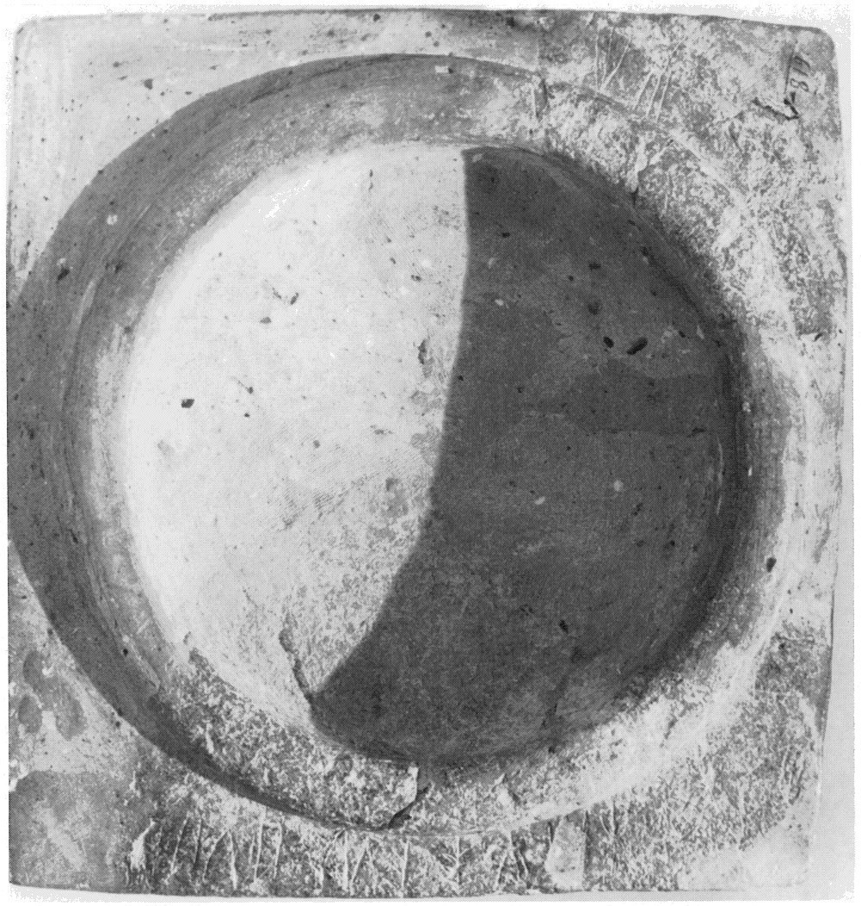
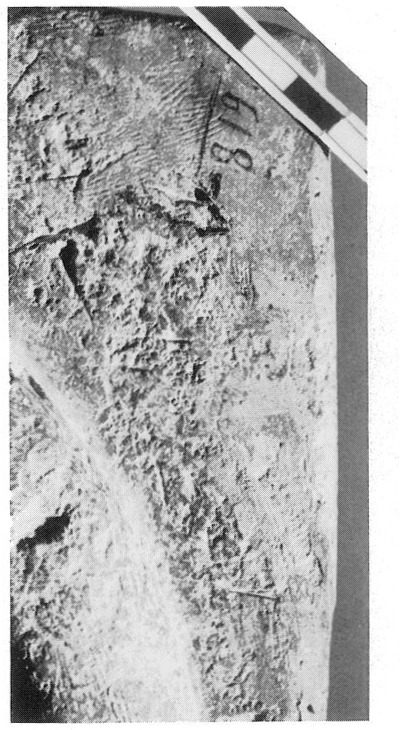
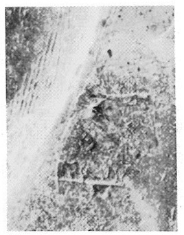
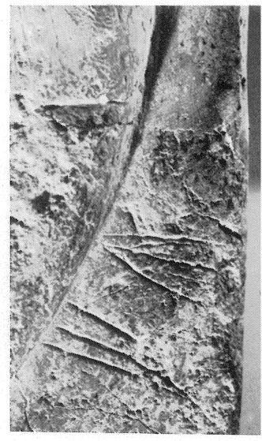
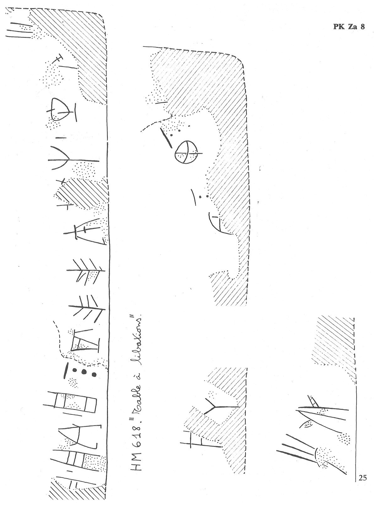

-
PKZa8
Names
PKZa8, PK Za 8
Support
Stone vessel
Location
Palaikastro
Findspot
Unavailable





Scribe
Unavailable
Context
Unavailable
Dimensions
Catalogue
Readings
1 1 0 NU none
1 1 1 *900 none
1 1 2 PA₃ none
1 1 2 E none
1 1 3 *900 none
1 1 4 JA none
1 1 4 DI none
1 1 4 KI none
1 1 4 TE none
1 1 4 TE none
1 1 4 *307 none
1 1 4 PU₂ none
1 1 4 RE none
1 1 5 *900 none
1 1 6 TU none
1 1 6 ME none
1 1 6 I none
1 2 7 JA none
1 2 7 SA none
1 2 7 U none
1 2 7 NA none
1 2 7 KA none
1 2 7 NA none
1 2 7 SI none
1 3 8 I none
1 3 8 PI none
𐘯𐄁𐘰𐘡𐄁𐘱𐘆𐘸𐘃𐘃𐙛𐘜𐘙𐄁𐘹𐘋𐘚𐘱𐘞𐘉𐘅𐘾𐘅𐘤𐘚𐘢
NU*900PA₃E*900JADIKITETE*307PU₂RE*900TUMEIJASAUNAKANASIIPI
𐘯𐄁𐘰𐘡𐄁𐘱𐘆𐘸𐘃𐘃𐙛𐘜𐘙𐄁𐘹𐘋𐘚
𐘱𐘞𐘉𐘅𐘾𐘅𐘤
𐘚𐘢
NU*900PA₃E*900JADIKITETE*307PU₂RE*900TUMEI
JASAUNAKANASI
IPI
PK Za 8
(HM 618) ) (GORILA
IV: 24-27), stone libation table (Bosanquet & Dawkins 1923, 141-42, no. 1)
(cave on lower slope of the Petsofas hill)
a: ]-NU
• PA
3
-
E
• JA-
DI
-KI-TE-TE-*
307
-
PU
2
-RE
• TU-
ME
-
I
b: JA-SA-[ ]
U-NA-KA-NA-
SI[ ]
c: I-
PI
-[
[GORILA IV 24-27]
a: JA-NA-KI-TE-TE-
KU
-PU
2
-RE not
impossible. JGY: TU-ME-I also occurs on PK Za 8a.
[JGY {11 v 2006}, at
the prompting of Miguel Valerio]
-
Commentary © John Younger
References
papers/GORILA-Vol4.pdf#page=69